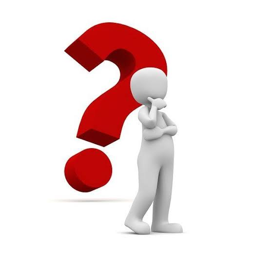

.png)
Proyectos
Mis juegos
Conoce mi proyecto actual y prueba la demo disponible.
Five Nights at Chino's
Un fangame inspirado en el streamer ElchinoLNB. Sobrevive a los enemigos que te acechan durante la noche y completa las noches posteriores para avanzar.
El juego sigue en desarrollo. La demo se puede descargar en Itch.io y también jugar en el navegador.
IMPORTANTE: LA DEMO SOLO SE PUEDE JUGAR EN PC Jugar demoThe Button
Un videojuego donde eres tú y un botón. ¿Qué hace el botón? No se sabe hasta que lo presiones. ¿Qué podría ocasionar un simple botón?
Este título está en desarrollo; su estado aún está por confirmar.
Estado por confirmar.

Just Fight
Adentrarte a una isla donde se realiza unas de las competencias más mortales del mundo y resuelve los misterios que aguarda la misma.
Este título está en desarrollo; su estado aún está por confirmar.
Estado por confirmar.
The bike
Un videojuego donde eres tú y un botón. ¿Qué hace el botón? No se sabe hasta que lo presiones. ¿Qué podría ocasionar un simple botón?
Este título está en desarrollo; su estado aún está por confirmar.
Estado por confirmar.
Lixbalt
Un Rogelite donde puedes usar diferentes personajes con distintos finales posibles cada uno. Solo trata de no morir o tendras que empezar desde cero
Este título está en desarrollo; su estado aún está por confirmar.
Estado por confirmar.